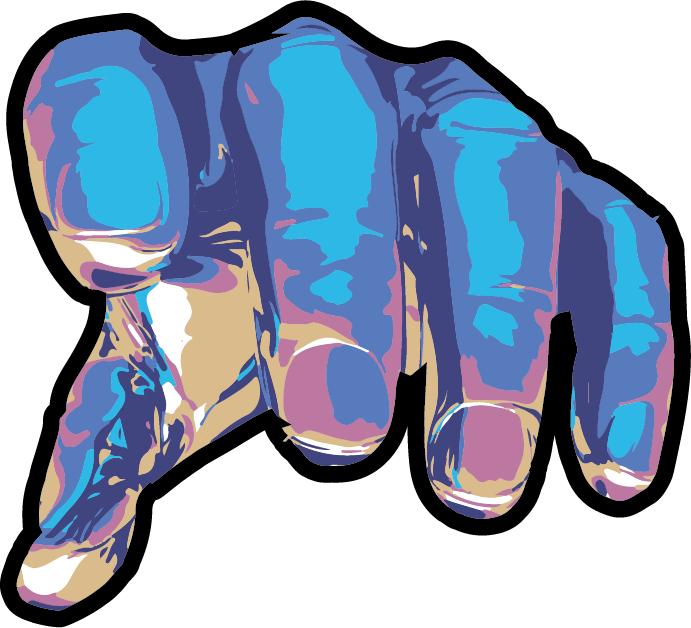

01
Short Film
Mala
A narrative short film — a story told through light, staging and patient character animation.
View project →Creative Generalist · 3D & Motion
A cinematic portfolio of characters, short films and crafted worlds — handmade, intentional, and a little mysterious.
Start here. My animated short film Mala — the clearest introduction to how I build worlds and bring characters to life.

Five projects, each its own world. Films, characters, posters and motion — the throughline is craft.
A narrative short film — a story told through light, staging and patient character animation.
View project →
A set of printed pieces exploring composition, type and colour — the graphic counterweight to the 3D work.
View project → s
s
A young girl lost in an endless forest. From hand-drawn references to a fully modelled 3D character — the heart of The Magic Forest.
View project →Character animation and movement studies — rigging, weight and timing turning still models into performances.
View project →
More from the workshop — the Sorcerer's Apprentice film, a fully rendered 3D children's room, and other crafted scenes.
View work →
About
I'm Moritz Richter — a creative generalist drawn to the point where story, character and image meet. I started in information science, then followed my curiosity into 3D and motion during my master's in Media & Game Conception.
I like giving characters a face and a feeling, then bringing them to life through animation. Whether it's a short film, a single character or a printed poster, I care about the same things: intention, atmosphere and the handmade detail.